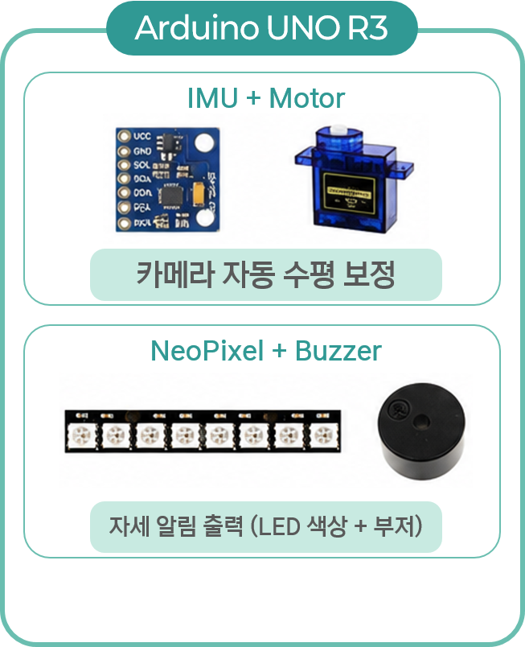
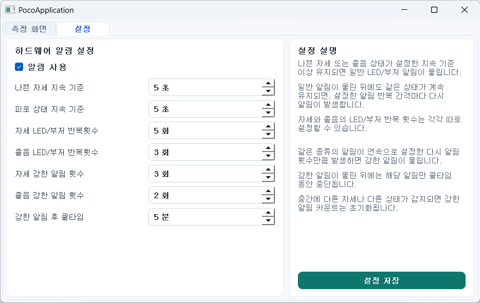
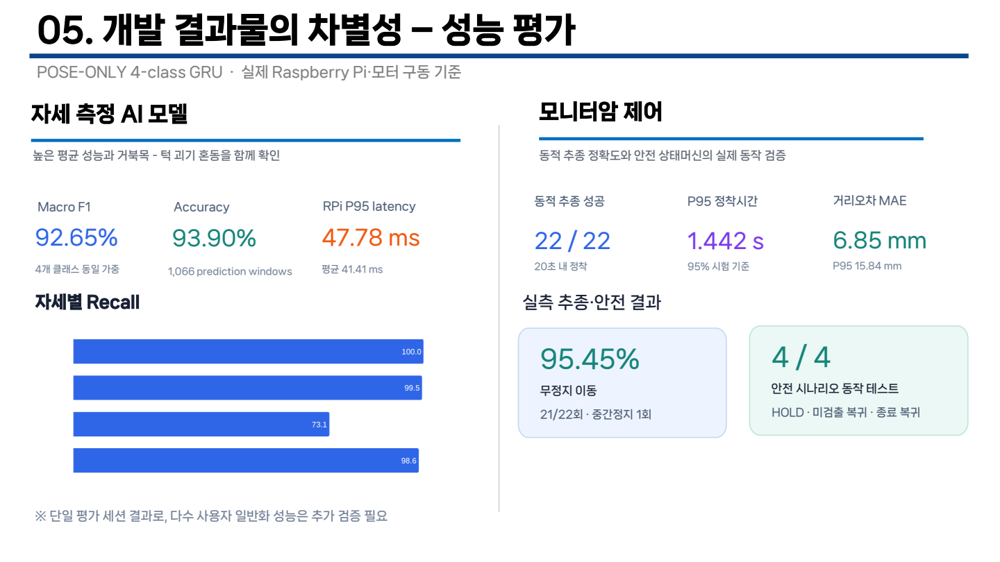

언어·실행 환경
- Python
- Arduino
- Raspberry Pi
01 / AI & EMBEDDED SYSTEM
🏅 임베디드 소프트웨어 경진대회 결선 진출
사용자의 자세를 분석해 피드백하고, 정상 자세에서 모니터 위치와 수평을 조절하는 시스템입니다. 비전 기반 코칭으로 시작해 실제 작업 환경을 조절하는 모니터암으로 확장했습니다.

자세를 알려주는 것만으로는 사용자의 작업 환경이 바뀌지 않습니다. 반대로 모니터가 사용자를 무조건 따라가면 잘못된 자세까지 따라갈 수 있습니다. 자세 판단과 환경 조절을 함께 연결할 필요가 있었습니다.
카메라 영상으로 정상 자세·거북목·턱 괴기·비대칭 자세를 구분합니다. 잘못된 자세에는 교정 정보를 보여주고, 정상 자세에서는 센서와 제어 조건을 확인해 모니터가 사용자의 위치를 따라 움직이도록 합니다.
정상 자세와 거리·IMU 기준값 설정
정상·비대칭·거북목·턱 괴기 분류
자세 피드백, 모니터 위치 추종과 수평 유지
측정 기록을 자세 분포와 누적 시간으로 확인

IMPLEMENTATION
Raspberry Pi의 Serial 명령을 설정 변경·알림·카메라 보정으로 분기했습니다. 자세 상태에 맞춘 LED·부저 피드백을 구성하고, MPU6050 기울기와 목표각을 비교해 카메라 서보를 제어했습니다.
IMPLEMENTATION
Motor1·2는 공동 개발했으며, 기존 Planner·MotorService 제어 경로에 사용자 위치 입력을 연결하고 하드웨어 통합을 담당했습니다. 입력 유효성, 준비 상태, 명령 주기, 캘리브레이션 안전 범위와 Recovery 상태를 확인하고 제어 보류 사유를 기록했습니다.

IMPLEMENTATION
PyQt 알림 설정을 Hardware Process에 전달하고 다음 실행 시 복원했습니다. 새 Pose 프레임만 기존 알림 판단·부저 서비스에 전달하고, 측정 종료 시 상태와 대기 명령을 정리했습니다.
| 구현 항목 | 결과 |
|---|---|
| 장치 제어 | Serial 명령을 LED·부저 알림과 카메라 서보 동작에 연결 |
| Motor1·2 연결 | 공동 개발 과정에서 입력·실행 조건 처리와 하드웨어 통합 |
| 알림 연동 | 설정 복원·새 Pose 프레임 처리·측정 종료 시 상태 정리 |
팀 전체 시스템 실물 시험 결과
POSE-ONLY 동적 추종 시험 · 고도화 개발완료보고서 15쪽

PROBLEM SOLVING · ARDUINO · SERVO
PROBLEM SOLVING
기존 제어 모듈을 연결하며, 기능 간 설정과 상태뿐 아니라 장치가 실행될 조건까지 함께 맞춰야 한다는 점을 배웠습니다.